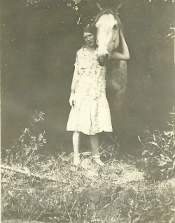

|
Finding Hope The story of a homestead girl growing up in Grandview, Oregon |
|

In the late ninteenth and early twentieth centuries cattlemen, farmers and sheepherders all found their promised land in Central Oregon. There was plenty of rain, graze, and free land to homestead.
A hundred years ago, for a brief two decades, mother nature brought together all the elements of a thriving community, and then took it all away. Rain was plentiful in Central Oregon in the Teens, but in the Twenties drought, fire and wind drove the settelers from their homes.
Finding Hope is the story of Hope Nance, a young girl pushed by the circumstance of her mother's early death to find her way to womanhood, guided by her memories of a mother she barely knew. You can view the scrapbook of the project HERE |
|
Remembering Mama chapter 2 Finding Hope A story of Grandview, Oregon (c) Guy Swanson
Rancher Nick Lambert settled in to build his herd, built a home at the west end of Big Canyon and donated land for the Geneva Cemetery. Hope remembers Nick as "a good old man, the oldest person we knew”.
"Geneva Cemetery is another documented name for what is now marked with the Grandview Cemetery sign” says Hope's grandson Eric. “After the sign was built, the cemetery was discovered to have been earlier referred to as Geneva Cemetery.”
Hope's mother was buried there in 1923 after an illness took her life, but with no formal grave marker. On Memorial Day in 1962 the family gathered to install a headstone, the beginning of an annual gathering than now includes dozens of families who have relatives buried there. They tend and decorate graves, visit, and remember the old times and stories. Hope showed me where she had staked out an empty plot next to her first husband. “He was the best one” she said, and in 1988 she reserved the plot for herself. Twenty-one of her relatives are there, including a son, daughter-in-law, two husbands, her brothers, a sister, and cousins. "I sent a letter to the County to fix that culvert, I need to make sure a hearse can get in here", she said, as nonchalantly as if she was locating a mailbox. "No cremation for me, I'm having the full funeral."
She doesn't care much for the countryside where she will someday join the family history. ”Wouldn't live there, wouldn't give 10 cents for the place...it was so hard growing up” The Stock Market fell by half in the Panic of 1907, unemployment more than doubled, and a new wave of emigrants heeded the siren call of homestead land and a new life in Central Oregon. The lower desert was relatively undiscovered, bordered north and east by the Metolius and Deschutes rivers and on the west by a national forest. Only footbridges connected it to the farmland around Culver before 1911, and it was accessible by wagon from the South across the roadless Squaw Creek Flats. It was like a land that time forgot. Over fifty families arrived at Grandview and claimed over 10,000 acres, land that had never felt the plow. They built schools for their children and a Grange Hall for their social life. They built homes and barns and planted acres of wheat and large vegetable gardens. There was a place to hold church services, a grocery store, a school, a post office, a blacksmith shop and three sawmills. Some filed new claims and some took over the relinquishments of original homesteaders who hadn't proved up. And some were squatters who moved into vacant homesteads of settlers who had moved on. Good times were coming to Central Oregon. A new railroad connected Madras to Astoria and by 1914 the new Panama Canal connected them to England. WWI was raging in Europe and they needed Central Oregon wheat, mutton, beef and horses. It's no wonder people thought they could come to this area, homestead a piece of ground and start a new life. "Soil which will, with the touch of the hand of man, enter a state of rapid transformation, and will develop into a yielder of bountiful returns. Dame Nature is ever ready to assist the industrious" The Madras Pioneer 10/31/12 Hope relates: “ Mama felt me coming and sent a girl to run and get Grandma Wilson. By the time she got there, mama was passed out on the floor, and I was squirming on the floor with the cord still attached. For years Grandma Wilson would always say I've never seen someone so blue and so dirty”. News of a new arrival spreads quickly in a farming community. Soon women would show up who had a pie or bread and jam to share. Others would take the time to make up a special pot of beans with a little extra ham or salt pork. There was no shortage of attention for the new little farm girl. Hope joined two older brothers, Fritz and Sanford, who were born in North Carolina. “Sanford was the oldest, he was 5 years older, and Fritz was born in 1915. We were close in age and he was my favorite.” Her sister, Pearl, soon followed. I wanted to know what Hope's first memory was, hoping it would be a good one, appropriate for this pioneer girl. “Getting whipped”, she said. “I think I was 3 or 4 years old and had to poop, I had my pants down but didn't make it out of the kitchen.” Describing her house, she said “there was a steep stairway that went up the edge of the house over the kitchen and seven beds. I remember we had to squirm down toward the bottom of the bed or our heads would get poked by nails that came through from the shingles.” Like many of the houses, the siding was vertical boards and battens. Inside walls of the Nance house were covered with a gray felt paper overlaid with newspapers, but the wind could still make it through the cracks. They had a wood stove in the living room, “ In winter we went to bed with both stoves going, but there wasn't any insulation and a cold wind came right through the cracks in the wall. The upstairs was warm when we went to bed, but it got cold pretty quick when the fires died down.” Winters were longer and colder in Central Oregon back then. Temperatures hovered near zero, and snow was deeper and stayed longer. We couldn't have a potty upstairs because we were above the kitchen, and papa was afraid we would kick it over. The outhouse was too far away, and lots of time there was snow, so I would just squat on the back steps. You had to be careful because the pee from the first person froze right away and the next person out the door might slip and fall. As time went by, porcupines chewed away at the back stoop to get the salt.” I guess I was born in the saddle,” she said, remembering her childhood. “I don't even remember not riding a horse. Not every kid had a horse, but my brothers and I did, mine was Old Prince.” Old Prince was too small for all three children to ride, so Sanford and Fritz would rope-lead him back and forth to school while Hope rode. One afternoon they were about a half-mile from the house when he jumped, maybe at a rabbit. “I got thrown, and knocked out. Fritz tried to wake me up.” Jumping on Old Prince Sanford took off at a full gallop get mama. Mama carried Hope the half-mile home and put her to bed. Mr. &Mrs. Webber came over and all night they stood a vigil. “It wasn't until 5 in the morning of the next day before I woke up”. "Papa branded all our horses with LZ, for Lonza Lee Zonie”. His given name was Alonzo, but he was known as "Zonie" to most who knew him personally. His grandson Eric said that “Alonzo Lee, said with a Southern drawl could sound an awful lot like Lanza Lee or Lanzale, depending on the talker's pronunciation and the writer's spelling abilities.” The few saddles they had were for grownups, which didn't matter because Hope liked riding bareback. “If we hadn't had them to the river lately, the horses would leave to get a drink, and I might have to be looking for them over the next 2 or 3 days. Old Prince was pretty good, though, I would just pull him over to a tree and he would stand there while I climbed the tree and hopped on his back.” Not having a lariat, she would just herd them back in the direction of the farm. Hope only had about three years of memories with her mother, but describes her as “very soft spoken.....she made us mind, and worked like a horse......Mamma worked so hard, pulling up five gallon buckets of water to fill the barrels". I remember one Easter when mama made Jello, it was such a treat. She would mix it and leave it outside overnight to cool and jell up. For the week before Easter we would run out early and find eggs and hide them, usually in plain sight, but out of the way so the dogs wouldn't get to them. Then an Sunday morning we would go out and get our eggs, bring them in and mama would use them to fix us a big breakfast.” One weekend Papa brought home a piano, “mama was so happy, she was teaching Pearl and me how to play. She liked to see us onstage, no matter if we were reading, plays, or whatever.” Hope still remembers what she recited on the school stage at one Fourth of July celebration.
The bumblebee stepped on an elephants toe
it hurt the poor soul so he could hardly go
he jumped so high till he touched the sky
and never came back till the fourth of July.
Hope only had her mother for six years, but remembers that "she had light red hair, everybody said that mama was the prettiest of all her sisters”. It took about four hours for the illness to take her, “I would try to talk to her, she would just say “what honey”, and soon she was gone.” Everybody at Grandview came for the funeral. “I remember Papa wrapped himself in a blanket and was crying.” That night Mr. & Mrs. Merrifield took Hope and Pearl home with them. She remembers that it was the first time she ever slept in a feather bed. Things weren't the same after mama died. “I think Pearl really didn't understand it at all, it was such a loss, it was bad time” . Grandma & Grandpa Glover came over for the first two weeks, “after that we had five or six housekeepers who took turns.” Papa had to keep working at the feed store in Culver during the week and he wrote to his mother in North Carolina to see if she could help. Grandma had raised seven children, Papa was the second oldest. Soon Papa had saved up the money to bring her out. Mama died in November and Grandma Nettie came out in March of 1924 with two of her children, uncle Mancil and aunt Maize. Uncle Sabe came out later.” She was fifty-two when she moved, “I'm sure it was quite a shock to her coming from the green of North Carolina”. It was now up to the new family to run the farm. Buy the Book |